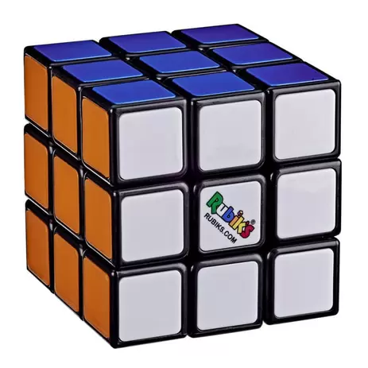
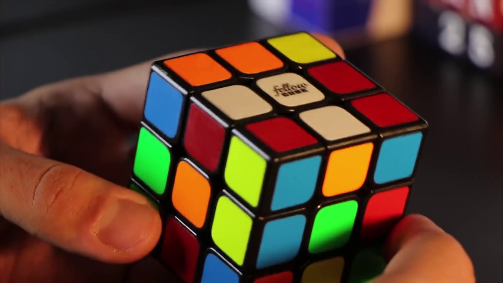

Cubo de Rubik (em inglês, Rubik's Cube), também conhecido como Cubo Mágico, é um quebra-cabeça tridimensional, inventado pelo professor de arquitetura húngaro Ernő Rubik em 1974.[1] Originalmente foi chamado de "Cubo Mágico" pelo seu inventor, mas o nome foi alterado pela Ideal Toys para "Cubo de Rubik" quando a empresa licenciou o brinquedo em 1980. Nesse mesmo ano, ganhou o prémio alemão do "Jogo do Ano" (Spiel des Jahres). Ernő Rubik demorou um mês para resolver o cubo pela primeira vez. O cubo de Rubik tornou-se um ícone da década de 1980, década em que foi mais difundido.

O cubo de Rubik é um cubo geralmente confeccionado em plástico e possui várias versões, sendo a versão 3x3x3 a mais comum, composta por 6 faces de 6 cores diferentes, geralmente com arestas de 56 mm cada. Outras versões menos conhecidas são o 2x2x2, 4x4x4 e 5x5x5.
É considerado um dos brinquedos mais populares do mundo, com mais de 350 milhões de unidades vendidas.
Muitos cubistas continuam a praticar e competir não só a resolução do 3x3x3, mas também outros similares. Desde 2003, a Associação Mundial do Cubo Mágico (WCA, World Cubing Association) organiza competições por todo o mundo e reconhece recordes nacionais, continentais e mundiais.
O primeiro protótipo do cubo foi fabricado em 1974[5] quando Ernő Rubik era professor do Departamento de Desenho de Interiores da Academia de Artes e Trabalhos Manuais Aplicados de Budapeste, Hungria.[6] Por mais que seja amplamente dito que o cubo foi construído como uma ferramenta para auxiliar seus alunos na compreensão de objetos 3D, seu propósito era resolver o problema estrutural de mover as partes independentemente sem que o mecanismo todo se desmanchasse. Ele não havia sequer realizado que tinha criado um quebra-cabeça até a primeira vez que embaralhou e tentou resolver o cubo. Rubik pediu patente para seu "Cubo Mágico" (Bűvös kocka em húngaro) em 30 de janeiro de 1975,[8] e HU170062 foi concedido mais tarde nesse mesmo ano.
Os primeiros lotes do Cubo Mágico foram produzidos no final de 1977 e lançados em lojas de brinquedo em Budapeste. Com a permissão de Rubik, o empresário Tibor Laczi levou um dos cubos para a Nuremberg Toy Fair, na Alemanha, em fevereiro de 1979 em uma tentativa de popularizar o cubo.[9] Foi notado pelo fundador de Seven Towns, Tom Kremer, e licenciado com Ideal Toys em setembro de 1979 para ser lançado mundialmente.[9] Ideal queria uma marca registrada com nome reconhecível, e o Cubo Mágico foi renomeado para Cubo de Rubik em 1980. O cubo fez sua estréia nas feiras de brinquedos de Londres, Paris, Nuremberg e Nova York em janeiro e fevereiro de 1980.